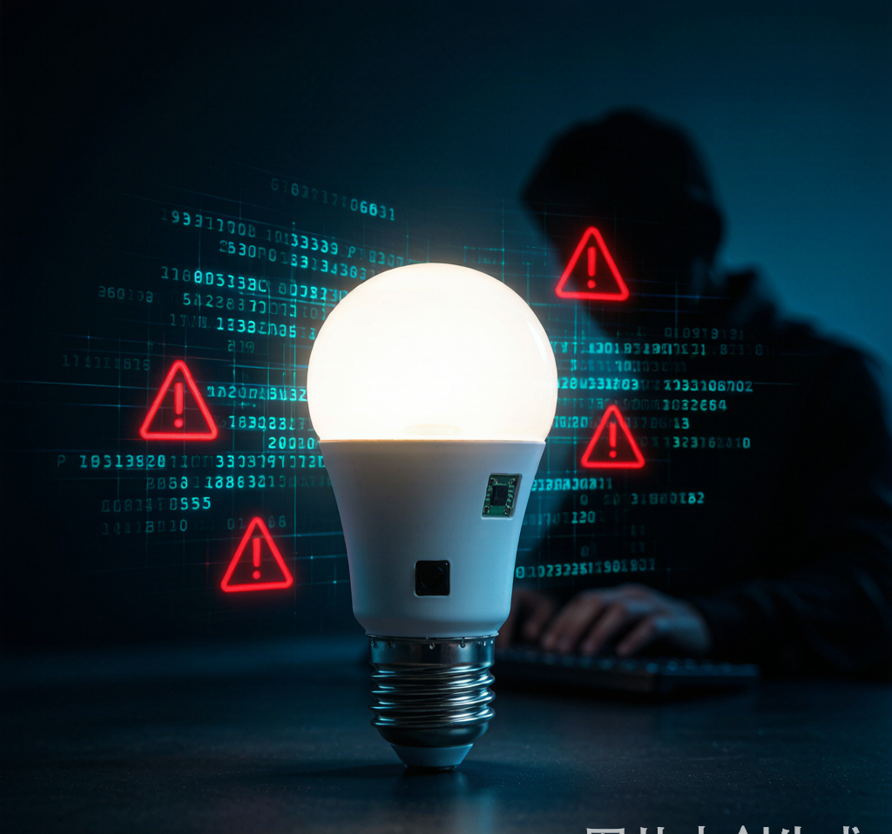
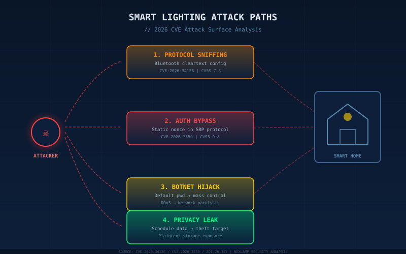
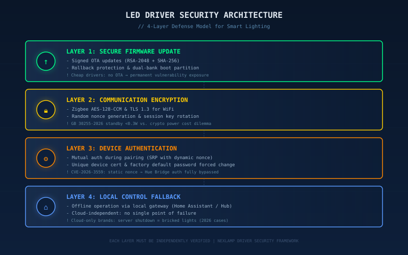
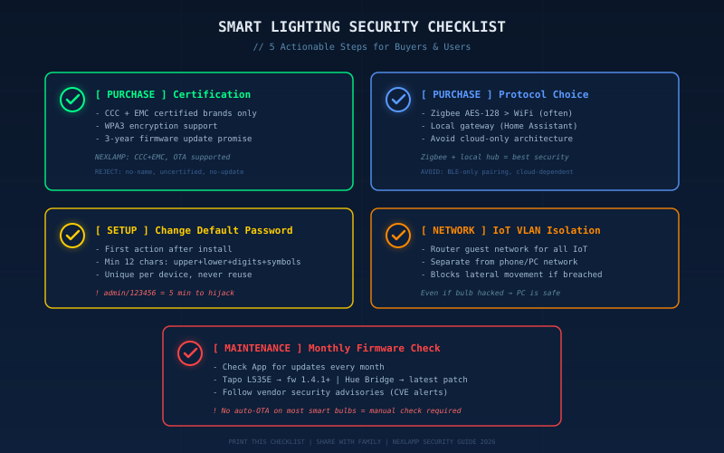

引言
2026年3月，Philips Hue Bridge被曝出认证绕过漏洞（CVE-2026-3559），CVSS评分高达9.8分——攻击者只要在同一局域网内，就能绕过身份验证接管你的全部智能灯具。7月，TP-Link Tapo智能灯泡又曝出蓝牙明文传输漏洞（CVE-2026-34126），配对时的配置数据完全不加密，10米范围内的任何人都能截获。
你以为智能灯只是调光调色的便利家电？它可能正成为你家网络安全最薄弱的一环。
智能灯泡的四大攻击路径
1. 通信协议嗅探：配对就是"裸奔"
TP-Link Tapo L535E智能灯泡在蓝牙配对阶段，将设备设置、认证参数等敏感数据以明文传输。攻击者只需一个廉价蓝牙嗅探器，在10-30米范围内就能完整截获配对数据。更严重的是，TP-Link Tapo L530E曾被研究人员发现存在4个连锁漏洞——伪造灯具身份→获取用户凭证→窃取WiFi密码→渗透整个家庭网络。

这不是个案。大量白牌智能灯为压缩成本，砍掉了加密模块和身份认证机制，只保留基础联网功能。这类设备就像不装门锁的房子——黑客利用默认密码admin/123456，几分钟就能接管一批廉价智能灯。
2. 认证绕过：一个静态Nonce攻破Hue Bridge
Philips Hue Bridge的漏洞更值得警惕。HomeKit Accessory Protocol服务在TCP 8080端口监听，使用SRP（Secure Remote Password）认证机制。问题出在——它用了一个静态Nonce值。密码学里Nonce必须每次随机生成，才能防止重放攻击。一旦固定，整个认证协议形同虚设。
攻击者在同一网络内发送特定请求，无需任何凭证就能获得root级别权限，可以修改灯光场景、停止照明操作，甚至以此为跳板攻击网络中的其他设备。
3. 僵尸网络劫持：你的灯泡可能正在攻击别人
黑客批量控制成千上万台弱安全灯具，组成僵尸网络发起DDoS攻击。安全机构实测发现，利用默认密码几分钟就能接管一批廉价智能灯。你的灯泡被劫持后，不仅家庭网络可能瘫痪，你的IP地址还会留下不良记录。
4. 隐私数据泄露：作息规律一览无余
智能灯具持续收集用户作息、离家回家时间、场景偏好等数据。如果这些数据以明文存储，一旦数据库泄露，不法分子可以精准判断你何时不在家——这比你在社交媒体上晒出差机票危险得多。
LED驱动电源：被忽视的安全防线
很多人不知道，LED驱动电源在智能照明安全体系中扮演着关键角色。

固件更新通道：安全事件发生后，厂商通过OTA推送补丁。但廉价驱动电源往往没有安全的固件更新机制——要么不支持远程更新，要么更新通道本身没有加密签名验证，攻击者可以推送恶意固件。TP-Link的Tapo漏洞修复就要求用户手动检查更新，没有自动OTA——大多数用户根本不会主动升级灯泡固件。
待机功耗与安全模块的矛盾：GB 30255-2026新国标要求待机功耗低于0.3W，但加密模块、安全认证都需要额外功耗。部分厂商为了过能效认证，直接砍掉了加密功能。这是一个需要平衡的设计难题——安全与节能不是非此即彼，但低价产品往往选择牺牲安全。
本地控制能力：支持本地离线控制的驱动电源，即使断网也能正常开关调光。而纯云端方案一旦服务器被攻击或服务停止，用户完全失去控制权。2026年已有多家小型智能灯品牌因服务器关闭导致用户灯具变砖。
5条可落地的选购与防护建议
选购时
1. 认准安全认证，拒绝"三无"产品
选择通过CCC认证、支持WPA3加密的品牌产品。查看产品是否有固件更新承诺——正规品牌至少承诺3年安全更新。NEXLAMP全系Tuya Zigbee智能驱动电源通过CCC和EMC认证，支持固件OTA安全更新。
2. 优先选择Zigbee协议+本地网关架构
Zigbee协议使用AES-128加密，安全性远高于明文蓝牙配对。配合本地网关（如Home Assistant），即使云端服务中断，灯具仍可正常控制。
使用时
3. 第一件事：改掉默认密码
这是最简单也最有效的防护。安装智能灯后，立刻修改出厂默认密码，密码长度至少12位，包含大小写字母、数字和符号。

4. IoT设备隔离网络
在路由器上创建访客网络或IoT专用VLAN，将所有智能灯泡、摄像头、门锁等IoT设备与手机、电脑等主设备隔离。即使灯泡被入侵，攻击者也无法跨网络访问你的个人数据。
5. 定期检查固件更新
每月检查一次智能灯App中的固件更新选项。关注厂商安全公告——如果使用TP-Link Tapo L535E，确保固件已升级到1.4.1以上；使用Philips Hue Bridge，确保已安装最新安全补丁。
常见问题
Q: 智能灯泡真的会被黑客攻击吗？又不是电脑？
A: 会。智能灯泡本质是一台微型计算机——有CPU、有内存、有网络模块。2026年已确认的CVE漏洞包括TP-Link Tapo（蓝牙明文）、Philips Hue Bridge（认证绕过）、Pharos Controls（root权限），攻击者可以远程控制灯光、窃取WiFi密码、甚至以此为跳板攻击网络中的其他设备。
Q: Zigbee和WiFi哪个更安全？
A: Zigbee更安全。Zigbee协议强制使用AES-128加密，每次通信都生成新的密钥。WiFi设备如果只使用WPA2且密码较弱，反而更容易被暴力破解。但无论哪种协议，关键是选择正规品牌并及时更新固件。
Q: 智能灯被入侵有什么实际危害？
A: 轻则被远程开关灯制造恐慌，中则被组入僵尸网络发起DDoS攻击导致你家网络瘫痪，重则通过灯具作为跳板窃取同网络下手机电脑的数据。带麦克风的高端智能灯甚至可能被劫持为窃听器。
总结
- 2026年智能照明安全漏洞频发，Philips Hue Bridge（CVSS 9.8）和TP-Link Tapo（CVSS 7.3）均曝高危漏洞，智能灯泡已成为家庭网络安全的新薄弱点
- 四大攻击路径：通信嗅探、认证绕过、僵尸网络劫持、隐私泄露——廉价白牌产品风险最高
- LED驱动电源是安全防线的关键：固件更新通道、加密模块、本地控制能力缺一不可
- 五条防护建议：认准CCC认证、选Zigbee+本地网关、改默认密码、IoT网络隔离、定期更新固件
- 安全与能效不是非此即彼——GB 30255-2026新国标推动行业升级的同时，不应成为削减安全功能的借口
如需安全可靠的智能照明驱动电源方案，请联系耐利普科技工程团队：138-2549-6855。